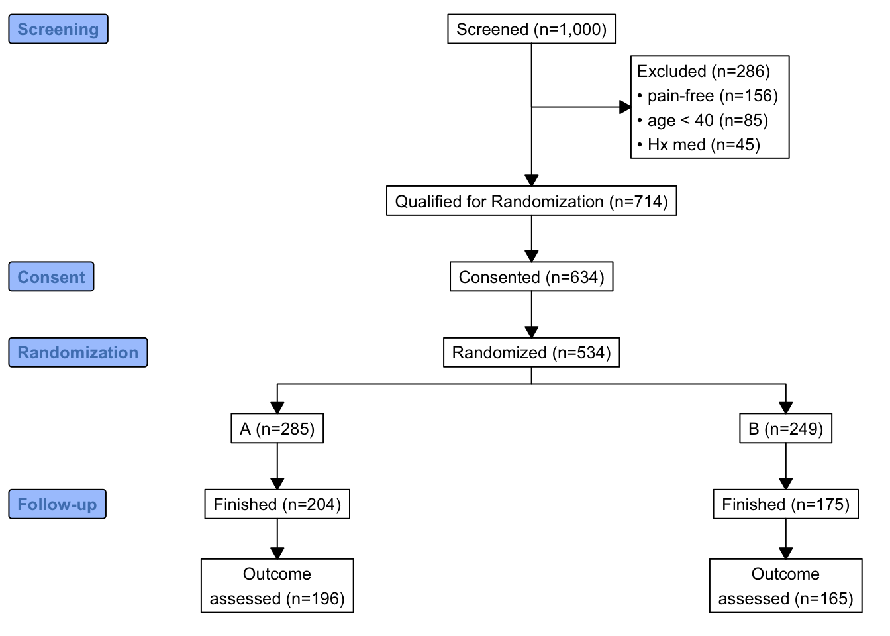
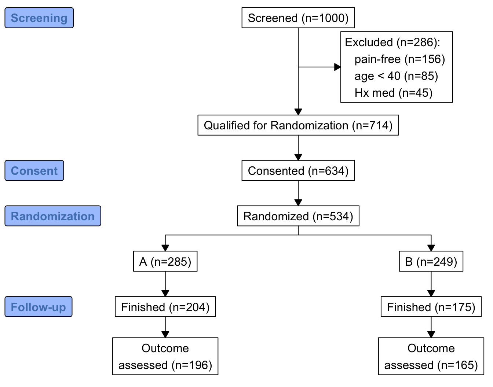

flowchart LR Fil[Observation Filtering] --> Di[Diagram With Insertion<br>Of Computed Counts] Di --> Con[Consort] Di --> Mer[Mermaid] dd[Data about Data] --> mvs[Missing Value Snapshot] dd --> dc[Data Characteristics] dc --> dcs["discrete vs. continuous<br>ties<br>information content<br>symmetry<br>rare values<br>common values"]
8 Data Overview
8.1 Filtering of Observations
When the number of subjects in the final analysis is less than the number of subjects initially entering the study, it is important to detail the observation filtering process. This is often done with a consort diagram, and fortunately R has the consort package by Alim Dayim for drawing data-driven diagrams. To demonstrate its use let’s simulate a two-treatment randomized clinical trial in which 1000 subjects were screened for participation.
See this for a nice interactive tool for constructing clinical trial flow diagrams.
require(Hmisc)
require(data.table)
require(qreport)
hookaddcap() # make knitr call a function at the end of each chunk
# to try to automatically add to list of figureN <- 1000
set.seed(1)
r <- data.table(
id = 1 : N,
age = round(rnorm(N, 60, 15)),
pain = sample(0 : 5, N, replace=TRUE),
hxmed = sample(0 : 1, N, replace=TRUE, prob=c(0.95, 0.05)) )
# Set consent status to those not excluded at screening
r[age >= 40 & pain > 0 & hxmed == 0,
consent := sample(0 : 1, .N, replace=TRUE, prob=c(0.1, 0.9))]
# Set randomization status for those consenting
r[consent == 1,
randomized := sample(0 : 1, .N, replace=TRUE, prob=c(0.15, 0.85))]
# Add treatment and follow-up time to randomized subjects
r[randomized == 1, tx := sample(c('A', 'B'), .N, replace=TRUE)]
r[randomized == 1, futime := pmin(runif(.N, 0, 10), 3)]
# Add outcome status for those followed 3 years
# Make a few of those followed 3 years missing
r[futime == 3,
y := sample(c(0, 1, NA), .N, replace=TRUE, prob=c(0.75, 0.2, 0.05))]
# Print first 15 subjects
kabl(r[1 : 15, ])| id | age | pain | hxmed | consent | randomized | tx | futime | y |
|---|---|---|---|---|---|---|---|---|
| 1 | 51 | 2 | 1 | NA | NA | NA | NA | NA |
| 2 | 63 | 2 | 0 | 1 | 1 | A | 3.0000 | 0 |
| 3 | 47 | 1 | 0 | 1 | 1 | A | 3.0000 | NA |
| 4 | 84 | 5 | 0 | 1 | 0 | NA | NA | NA |
| 5 | 65 | 3 | 0 | 1 | 1 | B | 3.0000 | 1 |
| 6 | 48 | 4 | 0 | 1 | 1 | A | 3.0000 | 0 |
| 7 | 67 | 3 | 0 | 1 | 1 | B | 2.0566 | NA |
| 8 | 71 | 0 | 0 | NA | NA | NA | NA | NA |
| 9 | 69 | 5 | 0 | 1 | 1 | B | 1.2815 | NA |
| 10 | 55 | 2 | 0 | 1 | 1 | B | 1.2388 | NA |
| 11 | 83 | 4 | 0 | 1 | 1 | A | 3.0000 | 1 |
| 12 | 66 | 5 | 0 | 1 | 1 | A | 3.0000 | 0 |
| 13 | 51 | 1 | 0 | 1 | 1 | B | 3.0000 | 0 |
| 14 | 27 | 2 | 0 | NA | NA | NA | NA | NA |
| 15 | 77 | 2 | 0 | 1 | 1 | A | 3.0000 | 0 |
Now show the flow of qualifications and exclusions in a consort diagram. consort_plot wants multiple reasons for exclusions to be prioritized in a hierarchy, and NA to be used to denote “no exclusion”. Use the Hmisc function seqFreq that creates a factor variable whose first level is the most common exclusion, second level is the most common exclusion after excluding subjects based on the first exclusion, and so on. seqFreq also returns an attribute obs.per.numcond with a frequency tabulation of the number of observations having a given number of conditions.
Had we wanted a non-data-dependent hierarchy we could have used
r[, exc := factor(fcase(pain == 0, 1,
hxmed == 1, 2,
age < 40 , 3,
default=NA),
1:3, c('pain-free', 'Hx medication', 'age < 40'))]r[, exc := seqFreq('pain-free' = pain == 0,
'Hx med' = hxmed == 1,
age < 40,
noneNA=TRUE)]
eo <- attr(r[, exc], 'obs.per.numcond')
mult <- paste0('1, 2, ≥3 exclusions: n=',
eo[2], ', ',
eo[3], ', ',
eo[-(1:3)] )
r[, .q(qual, consent, fin) :=
.(is.na(exc),
ifelse(consent == 1, 1, NA),
ifelse(futime >= 3, 1, NA))]
require(consort)
# consort_plot used to take a coords=c(0.4, 0.6) argument that prevented
# the collision you see here
consort_plot(r,
orders = c(id = 'Screened',
exc = 'Excluded',
qual = 'Qualified for Randomization',
consent = 'Consented',
tx = 'Randomized',
fin = 'Finished',
y = 'Outcome\nassessed'),
side_box = 'exc',
allocation = 'tx',
labels=c('1'='Screening', '3'='Consent', '4'='Randomization', '6'='Follow-up'))
consort_plot
consort provides another way to build the diagram that may be more flexible and intuitive after we define some helper functions. The built-in R pipe operator |> is used.
h <- function(n, label) paste0(label, ' (n=', n, ')')
htab <- function(x, label=NULL, split=! length(label), br='\n') {
tab <- table(x)
w <- if(length(label)) paste0(h(sum(tab), label), ':', br)
f <- if(split) h(tab, names(tab))
else
paste(paste0(' ', h(tab, names(tab))), collapse=br)
if(split) return(f)
paste(w, f, sep=if(length(label))'' else br)
}
count <- function(x, by=rep(1, length(x)))
tapply(x, by, sum, na.rm=TRUE)
w <- r[, {
g <-
add_box(txt=h(nrow(r), 'Screened')) |>
add_side_box(htab(exc, 'Excluded')) |>
add_box(h(count(is.na(exc)), 'Qualified for Randomization')) |>
add_box(h(count(consent), 'Consented')) |>
add_box(h(count(randomized), 'Randomized')) |>
add_split(htab(tx)) |>
add_box(h(count(fin, tx), 'Finished')) |>
add_box(h(count(! is.na(y), tx), 'Outcome\nassessed')) |>
add_label_box(c('1'='Screening', '3'='Consent',
'4'='Randomization', '6'='Follow-up'))
plot(g)
}
]
The mermaid natural diagramming language can be used to make consort-like flowcharts among many other types of diagrams. Quarto has built-in support for mermaid, and a qreport function makemermaid uses the capabilities of the knit_expand function in the knitr package to allow variable values to easily be inserted into mermaid specifications using the {variablename} notation. Whole diagram elements can be inserted by having {x} in a separate mermaid input line, where x is a character string that R constructs. Any node labels that contain parentheses must be enclosed in quotes. In the first example, exclusions are in one large node and a special output class (used to limited effect here) is used for this node.
addCap('fig-doverview-mermaid1', 'Consort diagram produced by `mermaid`')
x <- 'flowchart TD
S["Screened (n={{N0}})"] --> E["{{excl}}"]
S --> Q["Qualified for Randomization (n={{Nq}})"]
Q --> C["Consented (n={{Nc}})"]
C --> R["Randomized (n={{Nr}})"]
R --> TxA["A (n={{Ntxa}})"]
R --> TxB["B (n={{Ntxb}})"]
TxA --> FA["Finished (n={{Ntxaf}})"]
TxB --> FB["Finished (n={{Ntxbf}})"]
FA --> OA["Outcome assessed (n={{Ntxao}})"]
FB --> OB["Outcome assessed (n={{Ntxbo}})"]
classDef largert fill:lightgray,width:1.5in,height:10em,text-align:right,font-size:0.8em;
class E largert;
'
w <- r[,
makemermaid(x,
N0 = nrow(r),
excl = htab(exc, 'Excluded', br='<br>'),
Nq = count(is.na(exc)),
Nc = count(consent),
Nr = count(randomized),
Ntxa = count(tx == 'A'),
Ntxb = count(tx == 'B'),
Ntxaf= count(tx == 'A' & fin),
Ntxbf= count(tx == 'B' & fin),
Ntxao= count(tx == 'A' & ! is.na(y)),
Ntxbo= count(tx == 'B' & ! is.na(y)),
file = 'mermaid1.mer'
)
]flowchart TD S["Screened (n=1000)"] --> E["Excluded (n=286):<br> pain-free (n=156)<br> age < 40 (n=85)<br> Hx med (n=45)"] S --> Q["Qualified for Randomization (n=714)"] Q --> C["Consented (n=634)"] C --> R["Randomized (n=534)"] R --> TxA["A (n=285)"] R --> TxB["B (n=249)"] TxA --> FA["Finished (n=204)"] TxB --> FB["Finished (n=175)"] FA --> OA["Outcome assessed (n=196)"] FB --> OB["Outcome assessed (n=165)"] classDef largert fill:lightgray,width:1.5in,height:10em,text-align:right,font-size:0.8em; class E largert;
mermaid
In the second mermaid example, each exclusion is a subnode to the overall count of exclusions, and a new node is added to inform us about multiple exclusions per subject. To provide fuller information about multiple exclusions, the entire frequency distribution of the number of exclusions per subject appears as a hover text tooltip (thus the new node is not really needed). Let’s also remove the need for more error-prone manual coding of parallel treatment groups by creating a function parNodes to do this.
As of 2022-11-28
mermaid and quarto have withdrawn support for tooltips. This page will be updated if that changes.# Create some service functions so later it will be easy to change from
# mermaid to graphviz
makenode <- function(name, label) paste0(name, '["', label, '"]')
makeconnection <- function(from, to) paste0(from, ' --> ', to)
exclnodes <- function(x, from='E', root='E', seq=FALSE, remain=FALSE) {
# Create complete node specifications for individual exclusions, each
# linking to overall exclusion count assumed to be in node root.
# Set seq=TRUE to make use of the fact that the exclusions were
# done in frequency priority order so that each exclusion is in
# addition to the previous one. Leave seq=FALSE to make all exclusions
# subservient to root. Use remain=TRUE to include # obs remaining
# remain=TRUE assumes noneNA specified to seqFreq
tab <- table(x)
i <- 1 : length(tab)
rem <- if(remain) paste0(', ', length(x) - cumsum(tab), ' remain')
labels <- paste0(names(tab), ' (n=', tab, rem, ')')
nodes <- if(seq) makenode(ifelse(i == 1, paste0(root, '1'), paste0(root, i)),
labels)
else makenode(paste0(root, i), labels)
connects <- if(seq) makeconnection(ifelse(i == 1, from, paste0(root, i - 1)),
paste0(root, i))
else makeconnection(from, paste0(root, i))
paste(c(nodes, connects), collapse='\n')
}
# Create parallel treatment nodes
# Treatments are assumed to be in order by the tx variable
# and will appear left to right in the diagram
# Treatment node names correspond to that and are Tx1, Tx2, ...
# root: root of new nodes, from: single node name to connect from
# fromparallel: root of connected-from node name which is to be
# expanded by adding the integers 1, 2, ... number of treatments.
Txs <- r[, if(is.factor(tx)) levels(tx) else sort(unique(tx))]
parNodes <- function(counts, root, from=NULL, fromparallel=NULL,
label=Txs) {
if(! identical(names(counts), Txs)) stop('Txs not consistent')
k <- length(Txs)
ns <- paste0(' (n=', counts, ')')
nodenames <- paste0(root, 1 : k)
nodes <- makenode(nodenames, paste0(label, ns))
connects <- if(length(fromparallel)) makeconnection(paste0(fromparallel, 1 : k), nodenames)
else makeconnection(from, nodenames)
paste(c(nodes, connects), collapse='\n')
}
# Create tooltip text from tabulation created by seqFreq earlier
efreq <- data.frame('# Exclusions'= (1 : length(eo)) - 1,
'# Subjects' = eo, check.names=FALSE)
efreq <- subset(efreq, `# Subjects` > 0)
# Convert to text which will be wrapped by the html
excltab <- paste(capture.output(print(efreq, row.names=FALSE)),
collapse='\n')addCap('fig-doverview-mermaid2', 'Consort diagram produced with `mermaid` with individual exclusions linked to the overall exclusions node, and with a tooltip to show more detail')
x <- '
flowchart TD
S["Screened (n={{N0}})"] --> E["Excluded (n={{Ne}})"]
{{exclsep}}
E1 & E2 & E3 --> M["{{mult}}"]
S --> Q["Qualified for Randomization (n={{Nq}})"]
Q --> C["Consented (n={{Nc}})"]
C --> R["Randomized (n={{Nr}})"]
{{txcounts}}
{{finished}}
{{outcome}}
click E callback "{{excltab}}"
'
w <- r[,
makemermaid(x,
N0 = nrow(r),
Ne = count(! is.na(exc)),
exclsep = exclnodes(exc), # add seq=TRUE to put exclusions vertical
excltab = excltab, # tooltip text
mult = mult, # separate node: count multiple exclusions
Nq = count(is.na(exc)),
Nc = count(consent),
Nr = count(randomized),
txcounts = parNodes(table(tx), 'Tx', from='R'),
finished = parNodes(count(fin, by=tx), 'F', fromparallel='Tx',
label='Finished'),
outcome = parNodes(count(! is.na(y), by=tx), 'O',
fromparallel='F', label='Outcome assessed'),
file='mermaid2.mer' # save generated code for another use
)
]flowchart TD
S["Screened (n=1000)"] --> E["Excluded (n=286)"]
E1["pain-free (n=156)"]
E2["age < 40 (n=85)"]
E3["Hx med (n=45)"]
E --> E1
E --> E2
E --> E3
E1 & E2 & E3 --> M["1, 2, ≥3 exclusions: n=260, 25, 1"]
S --> Q["Qualified for Randomization (n=714)"]
Q --> C["Consented (n=634)"]
C --> R["Randomized (n=534)"]
Tx1["A (n=285)"]
Tx2["B (n=249)"]
R --> Tx1
R --> Tx2
F1["Finished (n=204)"]
F2["Finished (n=175)"]
Tx1 --> F1
Tx2 --> F2
O1["Outcome assessed (n=196)"]
O2["Outcome assessed (n=165)"]
F1 --> O1
F2 --> O2
click E callback " # Exclusions # Subjects
0 714
1 260
2 25
3 1"
mermaid with individual exclusions linked to the overall exclusions node, and with a tooltip to show more detail
Let’s repeat this example using graphviz, and instead of relying on a tooltip (which is no longer working anyway) put the exclusion frequencies in a remote node as a table.
makenode <- function(name, label) paste0(name, ' [label="', label, '"];')
makeconnection <- function(from, to) paste0(from, ' -> ', to, ';')
# Create data frame from tabulation created by seqFreq earlier
efreq <- data.frame('# Exclusions'= (1 : length(eo)) - 1,
'# Subjects' = eo, check.names=FALSE)
efreq <- subset(efreq, `# Subjects` > 0)x <- 'digraph {
graph [pad="0.5", nodesep="0.5", ranksep="2", splines=ortho]
// splines=ortho for square connections
node [shape=box, fontsize="30"]
rankdir=TD;
S [label="Screened (n={{N0}})"];
E [label="Excluded (n={{Ne}})"];
S -> E;
{{exclsep}}
M [label="{{mult}}"];
E1 -> M;
E2 -> M;
E3 -> M;
Q [label="Qualified for Randomization (n={{Nq}})"];
C [label="Consented (n={{Nc}})"];
R [label="Randomized (n={{Nr}})"];
S -> Q;
Q -> C;
C -> R;
{{txcounts}}
{{finished}}
{{outcome}}
efreq [label=<{{efreq}}>];
M -> efreq [dir=none, style=dotted];
}
'
w <- r[,
makegraphviz(x,
N0 = nrow(r),
Ne = count(! is.na(exc)),
exclsep = exclnodes(exc), # add seq=TRUE to put exclusions vertical
efreq = efreq,
mult = mult, # separate node: count multiple exclusions
Nq = count(is.na(exc)),
Nc = count(consent),
Nr = count(randomized),
txcounts = parNodes(table(tx), 'Tx', from='R'),
finished = parNodes(count(fin, by=tx), 'F', fromparallel='Tx',
label='Finished'),
outcome = parNodes(count(! is.na(y), by=tx), 'O',
fromparallel='F', label='Outcome assessed'),
file='graphviz.dot'
)
]
# addCap('fig-doverview-graphviza', 'Consort diagram produced with `graphviz` with detailed exclusion frequencies in a separate node', scap='Consort diagram produced with `graphviz`')graphviz with detailed exclusion frequencies in a separate node
Use graphviz to display missing data exclusions in support with respect to selected variables. The qreport missChk function will automatically start with the variable having the highest number of NAs, then go to the variable that is most missing after removing observations that are missing on the first variable, etc.
getHdata(support)
setDT(support)
# addCap('fig-doverview-missflow', 'Flowchart of sequential exclusion of observations due to missing values')
vars <- .q(age, sex, dzgroup, edu, income, meanbp, wblc,
alb, bili, crea, glucose, bun, urine)
ex <- missChk(support, use=vars, type='seq') # seq: don't make report
# Create tooltip text from tabulation created by seqFreq
oc <- attr(ex, 'obs.per.numcond')
freq <- data.frame('# Exclusions'= (1 : length(oc)) - 1,
'# Subjects' = oc, check.names=FALSE)
freq <- subset(freq, `# Subjects` > 0)
x <- '
digraph {
graph [pad="0.5", nodesep="0.5", ranksep="2", splines=ortho]
// splines=ortho for square connections
node [shape=box, fontsize="30"]
rankdir=TD;
Enr [label="Enrolled (n={{N0}})"];
Enr;
{{exclsep}}
Extab [label=<{{excltab}}>];
Enr:e -> Extab [dir=none];
}
'
makegraphviz(x,
N0 = nrow(support),
exclsep = exclnodes(ex, from='Enr', seq=TRUE, remain=TRUE),
excltab = freq,
file = 'support.dot'
)See Section 4.9 for more about the graphviz diagramming language.
8.2 Analyzing Data About the Data
The contents function displays the data dictionary and number of missing values for each variable. We can go deeper in summarizing a dataset as a whole. The qreport dataOverview function first produces a brief overview of the dataset with regard to number of variables, observations, and unique subject identifiers (if present). Then it provides a table, and a graphical report with one graph (in one report tab) per type of variable: continuous, discrete, or non-discrete non-numeric. Variable characteristics summarized are the number of distinct values, number of NAs, information measure (see describe), symmetry, modal variable value (most frequent value), frequency of modal value, minimum frequency value, and frequency of that value. When there are tied frequencies the first value is reported. The default display is an interactive plotly scatterplot with the number of distinct values on the x-axis and symmetry on the y-axis. The other data characteristics are shown as hover text. The points are color-coded for intervals of the number of NAs.
Info is the information in a variable relative to the information (1.0) in a variable having no tied values. Symmetry is defined as follows. For non-numeric variables, symmetry is one minus the mean absolute difference between relative category frequencies and the reciprocal of the number of categories. It has a value of 1.0 when the frequencies of all the categories are the same. For continuous variables symmetry is the ratio of the 0.95 quantile minus the mean to the mean minus the 0.05 quantile. This symmetry measure is < 1.0 when the left tail is heavy and > 1 when the right tail of the distribution is heavy.Again use the support dataset.
dataOverview(support)support has 1000 observations (32 complete) and 35 variables (16 complete)
| Variable | Type | Distinct | Info | Symmetry | NAs | Rarest Value | Frequency of Rarest Value | Mode | Frequency of Mode |
|---|---|---|---|---|---|---|---|---|---|
| age | Continuous | 970 | 1.000 | 0.756 | 0 | 18.042 | 1 | 67.102 | 3 |
| death | Discrete | 2 | 0.665 | 0.832 | 0 | 0 | 332 | 1 | 668 |
| sex | Discrete | 2 | 0.738 | 0.938 | 0 | female | 438 | male | 562 |
| hospdead | Discrete | 2 | 0.567 | 0.753 | 0 | 1 | 253 | 0 | 747 |
| slos | Continuous | 88 | 0.998 | 3.783 | 0 | 41 | 1 | 5 | 78 |
| d.time | Continuous | 582 | 1.000 | 2.988 | 0 | 39 | 1 | 4 | 25 |
| dzgroup | Discrete | 8 | 0.934 | 0.929 | 0 | Colon Cancer | 49 | ARF/MOSF w/Sepsis | 391 |
| dzclass | Discrete | 4 | 0.857 | 0.855 | 0 | Coma | 60 | ARF/MOSF | 477 |
| num.co | Discrete | 8 | 0.937 | 0.904 | 0 | 7 | 1 | 1 | 337 |
| edu | Continuous | 26 | 0.969 | 0.929 | 202 | 1 | 1 | 12 | 241 |
| income | Discrete | 5 | 0.872 | 0.888 | 349 | >$50k | 75 | under $11k | 309 |
| scoma | Continuous | 11 | 0.650 | 7.516 | 0 | 61 | 6 | 0 | 704 |
| charges | Continuous | 968 | 1.000 | 4.328 | 25 | 1635.75 | 1 | 4335 | 2 |
| totcst | Continuous | 896 | 1.000 | 4.032 | 105 | 0 | 1 | 0 | 1 |
| totmcst | Continuous | 618 | 1.000 | 3.656 | 372 | 829.63 | 1 | 0 | 12 |
| avtisst | Continuous | 242 | 1.000 | 1.651 | 6 | 1.667 | 1 | 13 | 38 |
| race | Discrete | 6 | 0.512 | 0.766 | 5 | asian | 9 | white | 781 |
| meanbp | Continuous | 122 | 1.000 | 1.179 | 0 | 20 | 1 | 73 | 33 |
| wblc | Continuous | 283 | 1.000 | 1.878 | 24 | 0.07 | 1 | 6.3 | 16 |
| hrt | Continuous | 124 | 1.000 | 1.297 | 0 | 11 | 1 | 80 | 48 |
| resp | Continuous | 45 | 0.993 | 1.195 | 0 | 7 | 1 | 20 | 147 |
| temp | Continuous | 64 | 0.999 | 1.262 | 0 | 32.5 | 1 | 36.398 | 57 |
| pafi | Continuous | 464 | 1.000 | 1.446 | 253 | 34 | 1 | 240 | 8 |
| alb | Continuous | 39 | 0.998 | 1.202 | 378 | 4.399 | 1 | 2.6 | 37 |
| bili | Continuous | 116 | 0.997 | 6.559 | 297 | 2.9 | 1 | 0.6 | 65 |
| crea | Continuous | 88 | 0.997 | 4.284 | 3 | 0.3 | 1 | 0.9 | 79 |
| sod | Continuous | 42 | 0.997 | 1.246 | 0 | 120 | 1 | 135 | 86 |
| ph | Continuous | 54 | 0.998 | 0.710 | 250 | 6.96 | 1 | 7.399 | 49 |
| glucose | Continuous | 227 | 1.000 | 2.711 | 470 | 11 | 1 | 96 | 9 |
| bun | Continuous | 107 | 1.000 | 2.672 | 455 | 2 | 1 | 18 | 21 |
| urine | Continuous | 360 | 1.000 | 1.677 | 517 | 1 | 1 | 0 | 12 |
| adlp | Discrete | 9 | 0.842 | 0.880 | 634 | 7 | 4 | 0 | 194 |
| adls | Discrete | 9 | 0.899 | 0.903 | 310 | 7 | 30 | 0 | 313 |
| sfdm2 | Discrete | 6 | 0.874 | 0.844 | 159 | Coma or Intub | 7 | <2 mo. follow-up | 338 |
| adlsc | Continuous | 251 | 0.967 | 2.535 | 0 | 1.57 | 1 | 0 | 313 |
|
|
Plot of the degree of symmetry of the distribution of a variable (value of 1.0 is most symmetric) vs. the number of distinct values of the variable. Hover over a point to see the variable name and detailed characteristics.